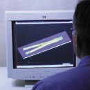
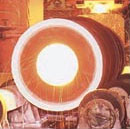
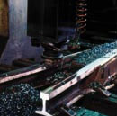
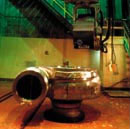

TOP >> サービス体制
企画・設計から販売まで 信頼の品質を築く一貫体制。
高品質な製品を安定してご提供することのできる一貫した生産体制は、新幹線用クロッシングの国内シェア100%といった数字が物語るように、高い信頼性を誇っています。そしてその信頼の品質は国内だけではなく、世界へとステージを広げています。

ユーザーニーズを具体化し、より満足度の高い企画、CAD/CAMによる製品設計を行います。

グラムの領域からトンの世界まで、独自の製造法を含めた様々な製造法でニアネットシェイプ化を可能にします。またOEMも積極的に展開しています。
>> 砂型鋳造法 >> 遠心鋳造法 >> ロストワックス鋳造法 >> LEVICAST法
>> DLCC鋳造法


加工 加工、組立て、表面処理といった様々なユーザーニーズにも対応します。

ISO9000シリーズの認証を受けた最新の検査設備による、確かな検査体制が信頼の品質を保証します。
世界に広がるネットワークを駆使し、ジャストインタイムな販売を行っています。
未来を見据えた研究・開発体制 |
世界的な特殊鋼メーカーである大同特殊鋼の研究・開発体制と連携し、常に時代に先駆けた製品づくりを目指しています。同社の強力なバックアップにより、鋳造の新たな可能性を追求していきます。 |